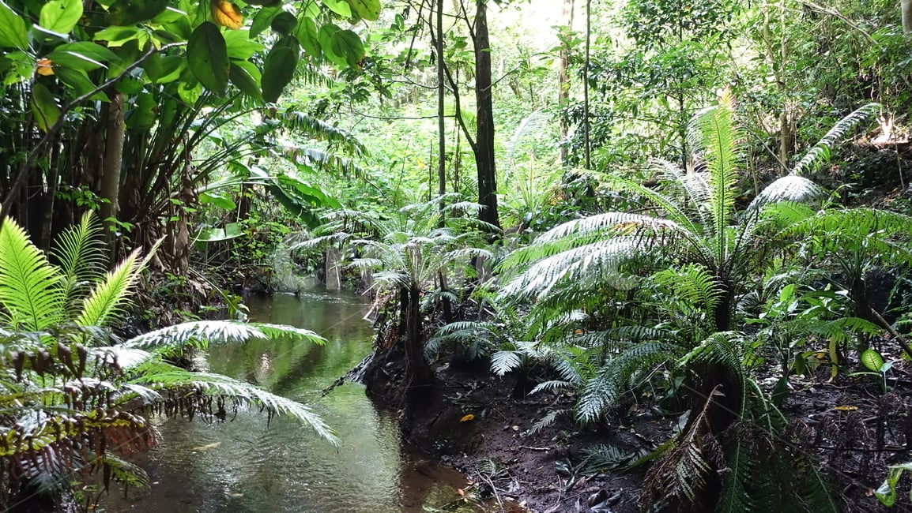

1.아마존정글
2.사막
3.북극 or 남극
1.한달을 살아야함 , 무슨일이 일어날지는 모름
2.한달치 식량, 텐트, 각종 도구 지급
3.한달살면 헬기가 구조하러옴

1.아마존정글
2.사막
3.북극 or 남극
1.한달을 살아야함 , 무슨일이 일어날지는 모름
2.한달치 식량, 텐트, 각종 도구 지급
3.한달살면 헬기가 구조하러옴
뭐여 내돈 왜안줌??
ai 피셜
사막>정글>북극>남극 순으로 생존확률이네
근데 이건 얼마줌
사막이 쉽긴할듯 특별히 위험한 동물도 없고, 텐트도 있고, 먹을것도 있고하니 덥고추운것만 해결보면 크게 어렵진 않을듯
이젠 돈도 안주고 죽으라하는구나!
사막이 그나마 나음
아마존은 나무 ㅈㄴ 많은 사막이고 남극은 춥기까지 한 사막임
사막은 낮에는 덥고 밤에는 추움
사막 일부지역은 영하로 떨어짐
독전갈
아마존 벌레 ㅈ나 많을꺼같아서
일단 아마존은 걸러야함 ㅋㅋ 저기는 생존난이도가 넘사벽임
아마존은 시바 저기 콘트리트 집지어주고 살라고 해도 못살듯
아마존은 열병/탈수/맹수 한달은 커녕 일주일도 어렵겠고
사막도 뭐..
맹수 없고 추위만 버티면 되는 남극이 최선일까
어차피 식량/텐트/도구 준다면야... 셋 중 유일하게 물 걱정 없는 것도 남극
한국의 남극기지 최저기온 영하 30~40도... 도구까지 주는데 못 살 정돈 아님
물도 주겠지
2.한달치 식량, 텐트, 각종 도구 지급
텐트에 대체 어떤 도구를 써야 영하 3 40도가 버텨지는겁니까
최하가 영하 30,40도라는 것은...평균은 그 이하라는 것...!
강원도 어지간한 곳도 체감 영하 20찍는데 사단장이 미쳐서 혹한기 내내 난로도 안 넣어줬다고...
원하는 도구 줘도 영하 20 30 못 견딜거면 사막 아마존에서 버틸리가...
식수유무에 따라 아마존 아님 사막인듯
남극은 절대 가면 안되는데 픽률이 높네
왜 절대 가면 안되나요
남극 온도는 텐트만으로 버틸 수 있는 온도가 아닙니다
닥치고 사막임
아마존은 걍 존나 위험
북극은 북극곰이 텐트 찢고 들어옴
남극은 걍 뒤짐
아마존 거르고
찾아보니 남극은 방한 도구만 충분하면 여름에는 살 수 있을듯. 겨울이면 거르는게 맞고
사막도 솔직히 힘든데 저 라인업이면 사막이 맞다고 생각함
사막좋긴한데 전갈무서웡
아마존빼고 던져줘
일단 열대우림은 논외... 위험한 동물이 너무많음
장비충분하면 사막 아니면 남극인데...
아마존 강가에 자리잡고 벌레퇴치용으로 연기만계속피우면 꽁승인데
아나콘다, 검은 카이만, 재규어, 퓨마...
아마존에 악어같은거 없음?
아마존에서 불만 피울수 있으면 나무잿가루 같은거 바닥에 깔아서 기어오는 벌레들은 막을수 있을거 같긴한데..
잘못하면 산불이라..
아마존은 습해서 산불이 안나
아하 그럼 안심하고 불내도 되겠다
저거 북극하고 이글루만들어서 살면안되나 도구준다고했으니 총은주겠지?
사막은 직사광만 텐트로 피하면 의외로 그리 덥지는 않음 오히려 밤에 추위를 대비해야함
내 버킷리스트 중 한가지가 몽고 사막에 가서 한달 살기임..
식량 걱정 안 해도 되는 거면 닥치고 북극 or 남극(남극이 더 나음)이지.
온갖 벌레, 균, 질병이 넘쳐나는 정글이나 사막을 뭐하러? 북극은 북극곰 제외하면 인간에게 해로울 게 딱히 없고, 남극도 매한가지고.
도구 주어지는 거면 주어진 도구로 최대한 단열이랑 바람 신경써서 주거지만 지으면 됨.
단순하게 더운게 추운것보다 싫어서 남극 북극 골랐는데...며칠버티고 죽으려나...
벌레가 싫어서 추워 죽어도 남극
사막은 밤엔 존나 기온떨어져서 낮밤 거꾸로 살면 자다 얼어뒤질일은없음 무조건 사막이 1티어인데 저중엔
북극 남극이 젤 높네? 이건 사막이 무조건 아닌가? 식량 물 지원해주면 한달 존버는 사막이 젤 안전하지
일단 아마존은 무조건 거를듯... 모기한테 뜯기고, 독충한테 물려서 사망할 듯;
선택 안할건데?
이제는 돈도 안주네
안전 생각하면 사막이 압도적으로 안전하니까 난 사막
아마존이나 북극 남극은 생존의 위협이 있는데 사막은 식량 텐트 도구만 있어도 죽을 일이 아예 없지
돈내놔
난 그냥 죽을듯
돈도안주네 ㅋㅋㅋㅋㅋㅋ